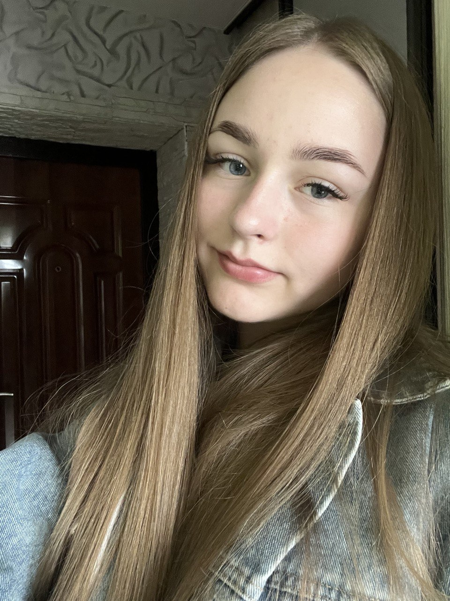

"Что разум человека может постигнуть и во что он может поверить, того он способен достичь"
Наполеон Хилл, журналист и писатель
ОБО МНЕ
Всем привет! Меня зовут Дарья, что с греческого языка- "сильная, побеждающая, владеющая богатствами и огнем". К достоинствам и положительным чертам девушек по имени Дарья часто относят доброту и щедрость, развитое воображение и интуицию, трудолюбие, активность и деятельность. И это на самом деле так! Родилась и живу в одном из красивейших городов Беларуси- Полоцке, который расположен в живописном месте, где река Полота впадает в Западную Двину. В 2010 году пошла в первый класс. Школа для меня была не просто местом, где я получала образование. Она была миром ежедневных открытий, общения со сверстниками, творческих увлечений. После окончания школы передо мной стоял сложный вопрос, связанный с поступлением в высшее учебное заведение, выбором специальности. Было много вариантов, но выбрала я Полоцкий Государственный университет, факультет информационных технологий, специальность- информационные системы и технологии(в экономике). Ведь это современно и перспективно. Обучение в ПГУ формирует мой дальнейший жизненный путь, профессиональную деятельность и влияет на качество самой жизни в перспективе. Мой девиз на сегодняшний день: "Будущее принадлежит тем, кто верит в красоту своей мечты"- Элеонора Рузвельт.
МОИ УВЛЕЧЕНИЯ
Чтение разнообразной литературы даёт мне возможность быть интересным собеседником- это значит ориантироваться в разных сферах, уметь аргументированно высказывать своё мнение, приводить примеры из книг.
Рисование по номерам развивает творческие способности, помогает прочувствовать разные цвета и оттенки- их сочетаемость и различия. Также помогает привести свои мысли в порядок, отдохнуть после тяжелого дня.
Чего я могла и не ожидать- так это того, что такое скромное занятие, как вязание, действительно может принести пользу моему мозгу, повысить интеллект. Теперь я с пользой провожу вечера и выходные среди клубков.
Приготовление различных блюд я люблю за то, что это помогает выделить время для общения с семьёй и друзьями, веселья и воспоминаний, которые мы сохраняем на всю оставшуюся жизнь.
Знание английского позволяет найти интересных собеседников и завести друзей по всему миру. Я смогу общаться с жителями многих англоязычных стран не прибегая к переводчику.
Регулярные поездки на велосипеде тренируют различные группы мыщц. Благодаря чему улучшается их форма. Поездки на велосипеде – самый простой способ получить дозу гормонов счастья.
Совсем недавно я открыла для себя это увлечение. Ведь это простая возможность дополнить свой образ. В будущем собираюсь пройти специальные курсы для повышения своего мастерства.
Моя кошка дарит много позитивных эмоций, её поглаживание снимает стресс, гармонизирует отношения в семье и даже повышает иммунитет. Наблюдение за кошкой доставляет мне огромное эстетическое удовольствие.
МОИ МЕЧТЫ